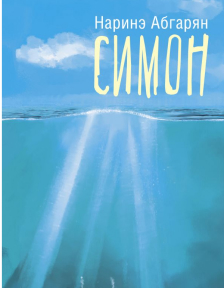
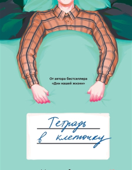
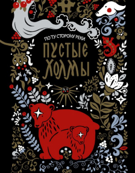
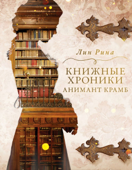
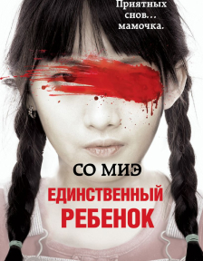
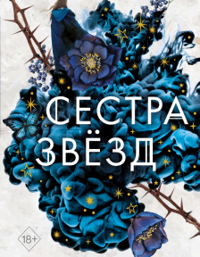
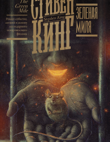
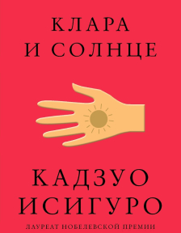

Новые книги

Симон

Тетрадь в клеточку

Пустые холмы

Книжные хроники Анимант Крамб
Бестселлеры

Единственный ребенок

Сестра звезд

Зеленая миля

Клара и солнце
О жизни и творчестве писателей
- Две любви и один кошмар Маргарет Митчелл: Почему автор «Унесённых ветром» спала с пистолетом под подушкой. Имя Маргарет Митчелл было овеяно легендами ещё при её жизни, а на следующий день после её трагической гибели все материалы и ранние рукописи «Унесённых ветром» были сожжены. Супруг писательницы, согласно её завещанию, оставил только те материалы, которые делали авторство его жены неоспоримым. Джон Марш стал вторым мужем Маргарет Митчелл, и ему в течение двух лет приходилось мириться с тем, что супруга не расставалась с пистолетом даже по ночам.
- "Против меня был целый мир — и я один". О чем писал Михаил Булгаков. Сейчас Михаил Булгаков — один из самых любимых всеми авторов. Но при жизни писателя все было по-другому: его работы запрещались, пьесы не ставились, печатались лишь некоторые рассказы.
- Профессорка одиночества. Евгения Некрасова об Отессе Мошфег. Исполнилось 40 лет Отессе Мошфег — одной из самых ярких писательниц поколения. По просьбе «Афиши Daily» писательница Евгения Некрасова рассказывает о ней — и поздравляет с днем рождения.
- Две гениальные сестры, две звезды Серебряного века. Они были безумно популярны, их произведениями зачитывались, они навсегда вошли в историю русской литературы начала двадцатого века. Обе были наделены неординарным литературным талантом. Серебряный век без них имел бы другое лицо. Но при этом, странное дело, мало кто знает, что они были родными сестрами.